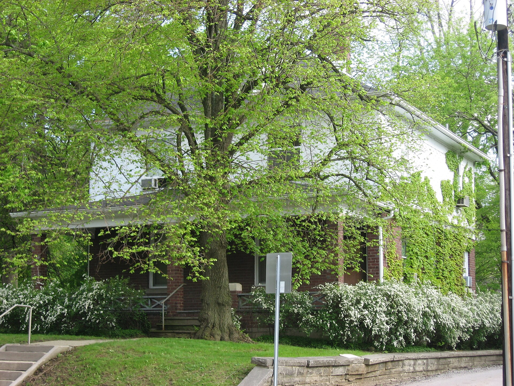

Chapter 10
The Historical Content
The starboard boats hung in their davits, swung out over nothing. The Lusitania leaned to starboard as she settled, and the angle widened by the minute, so that the boats on that side dangled above a gap of air and sea that grew with every passing second. A seaman gripped the falls. A steward called for women and children. The boat hung there, suspended between the deck and the ocean, unable to descend because the hull beneath it was curving away, the ship beneath it was falling, and the distance between the boat’s keel and the water was not the twelve feet it had been at two o’clock but something larger, something changing, something that could not be measured because the instrument for measuring it, the ship itself, was in motion. The seaman held the rope. The people stood at the rail. The boat could not reach the sea.
This was the system’s first failure, and it was visible within minutes of the torpedo’s impact. The RMS Lusitania carried forty-eight lifeboats: twenty-two wooden boats permanently swung on davits, and twenty-six collapsible boats stowed on deck. Under Board of Trade regulations for a vessel of her tonnage, she was required to carry only sixteen. Cunard had exceeded the minimum. The mathematics of capacity, however, had been calculated for a ship on an even keel in an orderly evacuation. What was happening on the afternoon of 7 May 1915 was neither of those things. The crew scrambled to launch the lifeboats almost immediately, but the conditions of the sinking made their usage extremely difficult or even impossible because of the ship’s severe list. Only six out of 48 lifeboats were launched successfully, with several more overturning and breaking apart.
Captain Turner had given the order from the bridge. The ship could not answer. The boats could not answer. The sea was claiming the vessel and everyone aboard her, and what Turner had commanded from the bridge was already dissipating into wind and noise, instructions without a mechanism to receive them, commands severed from the apparatus meant to carry them out.
On the port side, the problem was the mirror of the starboard side, and worse. The ship’s list to starboard meant that the port boats swung inward, toward the deck, rather than outward, toward the sea. To lower them was to drag them across the ship’s plating. Several crashed against the hull as they descended. The falls twisted. The davit arms jammed. One boat filled with passengers broke its tackle and dropped, spilling its occupants across the boat deck. Another was lowered until its gunwale met the rising sea while it was still partially under the ship’s overhang, and the water poured in over the side before anyone could ship the plug. Survivors at the Mersey Inquiry gave varying estimates, but most placed the angle in that range, and some said it steepened rapidly.
The ship was listing between fifteen and twenty degrees within the first five minutes. Survivors at the Mersey Inquiry gave varying estimates, but most placed the angle in that range, and some said it steepened rapidly. At fifteen degrees, a lifeboat suspended on the port side hangs at an angle that makes the falls bind against the davit heads. At twenty degrees, the boats on the starboard side swing so far out that the ropes run at an angle that makes controlled lowering nearly impossible. The Lusitania’s boats were designed to be lowered by men standing at the davit handles, paying out rope evenly on both ends. At a twenty-degree list, one end of the boat is higher than the other by several feet. The lower end hits the water first. The boat tips. People fall out. Or the boat floods.
Boat 14 was lowered on the port side with eleven people aboard. It reached the sea. It was launched safely. But the boat plug had not been set, and the sea came in through the drain hole, and the boat filled and sank almost immediately. Eleven people who had done everything right, who had reached a boat, who had gotten into it, who had been lowered without incident, found themselves in the water. The distinction between being in a lifeboat and being in the sea had collapsed in the time it took to lower thirty feet of rope. According to Schwieger’s log, he observed panic and disorder on the starboard side of the deck through U-20’s periscope, and by 14:25 dropped the periscope and headed out to sea.
The collapsible boats were worse. These were canvas-and-wood folding boats, stowed on the upper decks, meant to be assembled and launched in an emergency. Few of the crew had practiced with them. The Lusitania had carried out a boat drill on the morning of departure from New York, but it had been cursory, and it had not involved the collapsibles under conditions of list or panic. Now, with the deck tilted and people surging toward the rails, the collapsibles had to be manhandled to the davits, unfolded, and lowered. Some were swept off the deck by the sea as the water came up. Some were never opened at all. One was reported to have floated free from the ship as the deck submerged, still folded, serving no one.
The crew situation compounded the mechanical failure. The Lusitania carried 693 crew, but the deck crew, the men trained to launch boats, was a fraction of that number. Stewards, stokers, and galley staff were not boat handlers. When the order came to abandon ship, many of the trained seamen were at their stations in the engine room or at the watertight doors, following the emergency procedures that Turner had set in motion. They could not be in two places at once. The stewards who reached the boat decks did what they could. Some were brave and capable. Others had never handled a davit in their lives.
The result was visible across the boat deck. On the starboard side, boats hung in their davits, swung out over the gap, with passengers in them and no one able to lower them because the falls were taut at an angle that the davit mechanism could not manage. On the port side, boats scraped against the hull as they were lowered, or tilted, or broke free. At the stern, where the collapsibles were stowed, people fought to drag the heavy canvas-and-wood assemblies across a sloping, wet deck while the ship listed further and the sea crept up toward them.
Survivors on the port side of the deck painted a calmer picture than those on the starboard. Many, including authors and passengers who later wrote accounts, described a degree of order: people queuing at the rails, stewards assisting women and children into boats, a semblance of the evacuation drills that had been practiced. This was not universal. Other survivors described scenes of chaos: people rushing the boats, crew unable to control the crowds, boats lowered with too many people or too few, ropes parting, tackles jamming. The contradiction in the testimony is itself evidence. The Lusitania was seven hundred feet long. What was happening at one end of the boat deck was not what was happening at the other. The experience of the sinking depended on where you stood, and where you stood depended on the list, and the list was not uniform. It was worsening by the minute.
The second explosion had done something to the ship that the torpedo alone might not have. Witnesses reported a geyser of steel plating, coal smoke, cinders, and debris high above the deck after the second blast. Crew working in the forward boiler rooms claimed they were inundated immediately.
The watertight doors, which Turner had ordered closed, may not have held, or may not have been closed in time, or may not have been sufficient to contain the damage. The ship was taking water not in one compartment but across a broad section of her hull, and the list was the visible evidence of asymmetrical flooding that the ship’s designers had not anticipated.
In Schwieger’s own words, recorded in the log of U-20: ‘Torpedo hits starboard side right behind the bridge. An unusually heavy detonation takes place with a very strong explosive cloud. The explosion of the torpedo must have been followed by a second one [boiler or coal or powder?]… The ship stops immediately and heels over to starboard very quickly, immersing simultaneously at the bow…’
The Lusitania’s bulkhead design was standard for her era. She was built with transverse bulkheads dividing the hull into compartments, designed to keep the ship afloat if one or several of those compartments flooded. But the bulkheads did not extend above a certain deck. They were not designed for the kind of progressive, lateral flooding that follows a blast large enough to breach multiple compartments on one side. The ship’s stability depended on the water staying below the bulkhead deck. If water reached that deck and began to flow transversely, across the ship, through passageways and stairwells, then the list would worsen uncontrollably. This is what appears to have happened.
The list steepened. The boats that had been difficult to lower became impossible. The boats that had been impossible became irrelevant. The sea reached the boat deck.
There is a detail that belongs here, though it belongs to no one’s testimony of the sinking itself. Clive Cussler, in his nonfiction book The Sea Hunters, relates that after the sinking of the Lusitania, Tower swore that he would take up farming and never go to sea again. The detail is apocryphal. It is not reported as if it were verifiably true.
But it exists in the record because the sinking produced both corpses and inquiries and stories, and the stories grew around the event like barnacles on a hull, adhering to the facts, obscuring them, becoming themselves a kind of historical content. The legend of Tower is one such story. The Mersey Inquiry would deal in another kind of story, the kind sworn under oath, cross-examined, entered into the record. But the legend and the testimony shared a common origin in the same eighteen minutes, and both would outlive the ship.

By 2:10, five minutes after the torpedo, the list was severe enough that the port-side boats could not be cleared from the ship. The davit arms, designed to swing outward, were instead pressing the boats inward, against the deckhouse bulkheads. Passengers who had climbed into those boats found themselves trapped, unable to be lowered, unable to climb out, sitting in a vessel that was becoming a cage. Some jumped. Others waited. Some were still waiting when the sea came up to meet them.
On the starboard side, the boats swung free, but the angle of the falls meant that lowering was a matter of brute force and luck. One end of the boat descended faster than the other. The boat tilted. Passengers slid. Some boats reached the water upside down. Others were swamped by the waves that the ship’s own motion, still underway, still moving forward through the sea, churned up around them. Turner had ordered the engines stopped, but the ship had way on her, and the way did not come off in time. The boats that reached the water did so in the wake of a ship still moving, and the turbulence capsized some of them.
The list was the master variable. It made the boats unusable, the falls unmanageable, the davits unworkable. It turned a ship with adequate lifeboat capacity into a ship from which most of the lifeboats could not be launched. And the list was the product of the damage: the torpedo’s damage, and the second explosion’s damage, and the flooding that followed, and the design of the bulkheads that could not contain it. The list was the physical expression of everything that had gone wrong below the waterline, made visible on the deck as a tilt that grew until the deck was not a deck but a wall, and the boats were not boats but weights hanging from ropes, and the sea was not below but beside, and then above.
By 2:15, ten minutes after the torpedo, the sea had reached the port-side boat deck. The water came up as the ship went down, and the boats that were still on their davits on the port side were submerged before they could be launched. Passengers who had been standing at the port rails were now standing in water. Some were swept off the deck. Some climbed to the starboard side, where the deck was higher, where the boats still hung in the air above the sea. But the starboard boats were still hanging, still unable to be lowered, still swinging over a gap that was now narrowing as the ship settled lower.
The narrowing gap was its own problem. As the ship sank, the distance between the starboard boats and the water decreased, which should have made lowering easier. But the ship’s motion, her forward way, her roll, the turbulence from her engines and her hull, made the sea beneath the boats a churning surface, not a calm one. Boats that reached the water were buffeted. The ship’s momentum dragged some of them under. Falling debris struck others. Crowded with people who had jumped from the rails, several capsized from the weight.
The eighteen minutes of the sinking were not a single event but a sequence of failures, each one producing the conditions for the next. The torpedo produced the list. The list produced the launch failure. The launch failure produced the scramble. The scramble produced the drownings. And the second explosion, whatever it was, wherever it originated, accelerated the entire sequence beyond the speed at which any human procedure could function. The ship was sinking too fast for the boats, too fast for the crew, too fast for the passengers, too fast for the systems that had been designed to save them.
Those systems had been designed for a different disaster. They assumed a ship that lost buoyancy slowly, in calm water, on an even keel, with time to launch boats in an orderly sequence. They had not been designed for a ship struck by a torpedo that flooded multiple compartments on one side, that listed fifteen degrees in five minutes, that experienced a second explosion of unknown origin, and that sank in eighteen minutes. The gap between the design and the disaster was the gap between the boats that could be launched and the boats that could not, between the people who found a seat and the people who did not, between the 761 survivors and the 1, 198 dead. The ship’s trim levelled out 18 minutes later, and she sank at position 51°24′45″N 08°32′52″W, with the funnels and masts the last to go under.
The boat deck was now nearly empty of boats. A few had been launched. Most hung in their davits or had been swept away or were submerged. The people who remained on the deck were the people for whom the system had failed. The surface beneath their feet was becoming a wall. The sea was not below them but beside them, and rising. They were holding children, or holding the rails, or holding each other. The boats were gone, or going, and the boats that had gone were half-empty, and the people on the deck were not in them.
A lifeboat pulled away from the starboard side with perhaps twenty people in it, though its capacity was fifty. It pulled away because it could not be filled. The angle of the falls made boarding impossible, and the seaman at the davit had chosen to lower it rather than hold it until more people could climb in, because holding it meant risking that the ship’s list would worsen and the boat would be lost entirely. He made a choice. The choice was rational. The boat left with twenty people in it. Behind them, on the deck, were hundreds.
On the boat deck, the people who remained watched the boats go. Some were still standing. Others were already in the water, having jumped or having been swept.
The ship was nearly on her side. The funnels were low against the water. The sea was everywhere. The boats that had gotten away were pulling at their oars, trying to put distance between themselves and the hull that was still going down. A few of those boats were full. Most were not.
The half-empty ones rowed away from the ship with empty seats facing the water, and the people in the water reached for those seats. Some of them reached them. Most did not, because the boats were moving away, and the people in the boats were not looking back, or were looking back and could not stop, because the ship was going down and the suction was coming and the boats had to be clear of it.
The sea was taking the Lusitania, and the boats that should have carried her people to safety were scattered across the water, some full, some empty, some overturned, some so far from the ship that they might as well have been in another ocean. The people on the deck and in the water were beyond the boats now. The boats had gone, and the boats had not taken them, and the water was where the boats should have been.